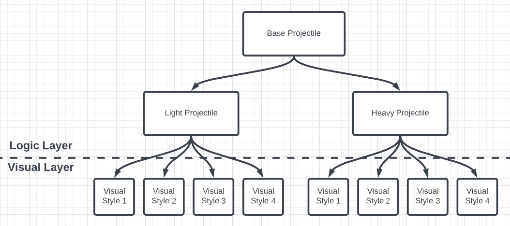

Overview
Projectiles
In our game, projectiles are represented by a series of Blueprints with a rigidly defined inheritance structure to pass down specific behaviors. There are two sections to the inheritance structure, the “Logic” section and the “Visual” section, which are separated by a dotted line below. All the behaviors are implemented in the logic layer, and only different VFX styles are used in the visual layer. This separation was made to make more unique projectiles with ability upgrades and more distinguished differences in enemy and player VFX.
Logic Layer
On the logic layer, there are just three Blueprints: Base Projectile, Light Projectile, and Heavy Projectile. The Base Projectile handles the projectile logic shared by all projectiles and acts as a parent to the light and heavy projectile blueprints. This projectile also defines and calls some special event methods that the children's classes use for unique behaviors and upgrades. All projectiles are passed a Character Abilities Struct that the projectiles use to determine their behaviors. It also has a VFX Manager attached so that child-defined VFX in the visual layer works without needing to program anything on the visual layer.
Visual Layer
On the visual layer, changes are made to the VFX manager to change how a projectile should look. There will be as many projectiles on this layer as there are visually distinct projectiles. These projectiles will be what is created by an enemy or player and will inherit all logic from the logic layer. When a Base Character uses the CreateProjectile method, the correct visual projectile will be chosen to instantiate using its Ability Struct.